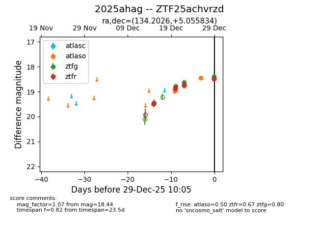
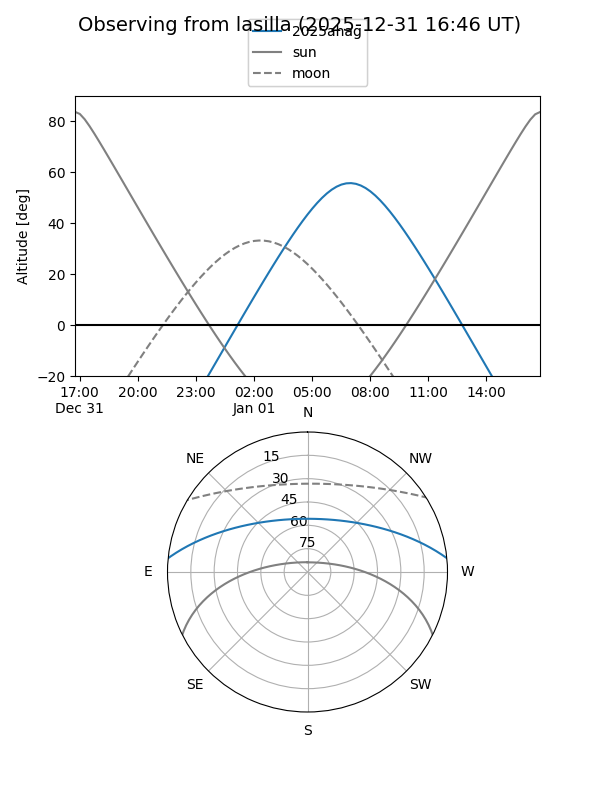
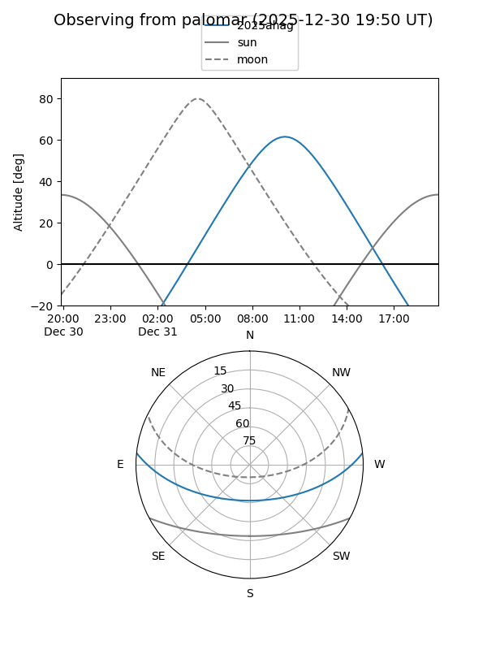
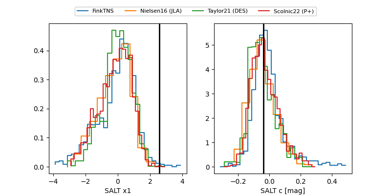

2025ahag
Target 2025ahag at 2025-12-31 18:00
Aliases and brokers:
FINK: link
Lasair: link
ALeRCE: link
TNS: link
YSE: link
alt names
ZTF25achvrzd (ztf,fink_ztf)
2025ahag (tns,yse)
ATLAS25qdt (atlas)
PS25kxb (panstarrs)
Coordinates:
equatorial (ra, dec) = 134.2026,+5.05583
equatorial (HMS+DMS) = 08:56:48.63,+05:03:21.00
galactic (l, b) = (223.4420,+30.08747)
Flags:
Photometry:
last atlasc=18.39, atlaso=18.45, ztfg=18.44, ztfr=18.49
1 atlasc, 3 atlaso, 6 ztfg, 7 ztfr detections
Lightcurve

Visibility


Additional plots
